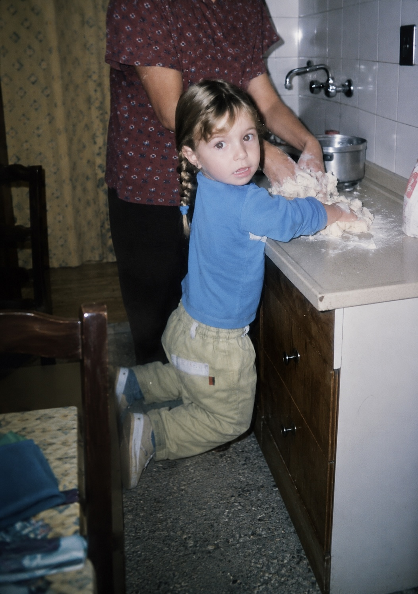

📷 Foto de Rocío / Familia"Detrás de Lo de Marta estoy yo, Rocío, una apasionada por crear con las manos y por esas recetas que guardan recuerdos."
Desde chica crecí entre amasados, aprendiendo de mi abuela Marta y de mi mamá que la cocina es mucho más que preparar comida: es una forma de demostrar amor, compartir y reunir a las personas. Con el tiempo descubrí que quería transformar esa pasión en algo propio.
Así nació Lo de Marta, un emprendimiento que combina la tradición familiar con mis ganas de seguir aprendiendo, creciendo y creando. Cada sorrentino que preparo lleva un poco de esa historia: recetas caseras, dedicación y el deseo de que cada comida se convierta en un momento especial.
"Porque las mejores historias, muchas veces, empiezan con una masa casera y una receta compartida en familia." ❤️🍝Quiero probarlas
Probá la diferencia de lo hecho a mano. Más relleno, más sabor, más hogar.
Convertimos ingredientes simples en momentos especiales. Cuando la calidad se nota desde el primer bocado, sabés que tu próxima comida favorita está acá.